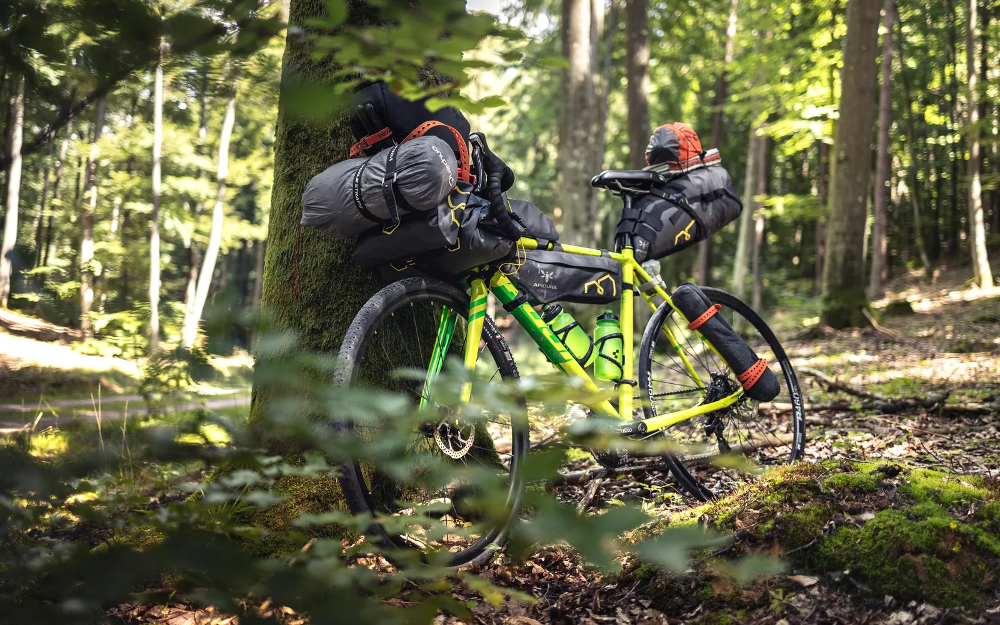
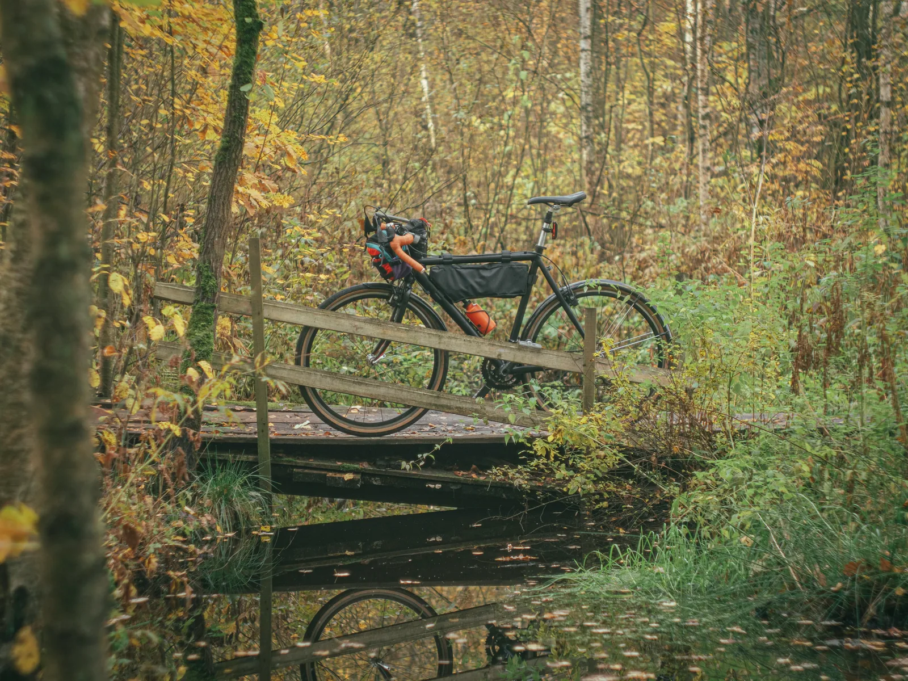
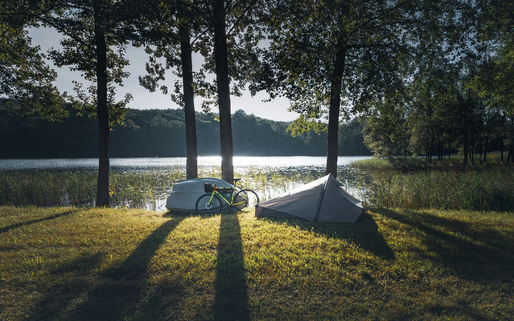
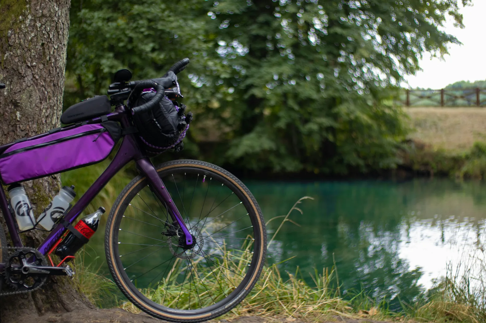

Two days, roughly 80 kilometres of forest gravel, and one night in a cabin on a lake. The Nordmarka overnighter starts at a tram terminus twenty-five minutes from central Oslo and finishes in the same place. There is no car involved, no route-finding through traffic, and nothing technical to ride. It is the most accessible proper bikepacking trip we know of anywhere near a European capital.
Ride north out of Maridalen on day one and climb steadily into the forest until you reach Lake Katnosa, where a former dam keeper's cottage now serves as a cabin you can book. Sleep there. On day two, loop south past a chain of forest lakes, stop at Kikutstua for coffee and waffles, and drop back down through Maridalen to where you started.
The distances are roughly 35 to 40 km on day one and 40 to 45 km on day two, all on hard-packed forest roads. The riding is long rather than difficult. There is real climbing as you head north, and you will feel it with luggage on the bike, but there is no singletrack and nothing that demands bike-handling skill. If you can ride 40 km on gravel in a day, this trip is within reach.
Start at Kjelsås, the northern end of tram line 11. The forest entry at Maridalen is minutes away, which is the whole point of starting here rather than downtown. We wrote about that approach in more detail in Kjelsås to Maridalen.
Head north along Maridalsvannet, past the old farms and the ruins of Margaretakirken, then continue up the valley beyond Skar. The gravel climbs gradually through Ørfiske and Sandungen, the buildings thin out, and the forest closes in properly. The last stretch takes you into the Katnosa–Spålen nature reserve, an area of old-growth forest, deep hillsides and steep slopes that feels considerably further from a capital city than it is.

Kjelsås is not the only way in. Sognsvann, at the end of metro line 5, is the other forest gateway, and it drops you on the Nordmarka road network just as directly. We rent bikes with pickup there as well, so the trip runs the same way: metro out, collect the bike, ride north.
From Sognsvann the gravel climbs north through the forest and joins the same roads toward Kikut and Katnosa. That opens up two variations: run the loop in reverse, or start at one gateway and finish at the other, which makes for a slightly different ride on each day. Our guide to getting to Sognsvann covers the approach in detail.
One thing to check before you plan around it: from 6 July to 16 August 2026, metro lines 4 and 5 on the Sognsvann branch are closed for upgrade work, and replacement bus 5B runs from Majorstuen instead. Kjelsås and tram line 11 are unaffected, so that is the simpler start this summer.
Katnosdammen sits right on the water at Lake Katnosa. It was the dam keeper's cottage; it is now an unstaffed DNT cabin with two storeys, three bedrooms and 14 bed spaces, plus extra mattresses if your group is larger.
It is better equipped than most people expect. There is electricity, a wood stove for heat, a gas burner and oven for cooking, a fridge, and basic cooking equipment. Duvets and pillows are provided, but a sleeping bag liner or your own bedding is mandatory, and you carry in all of your own food. Three canoes and life jackets belong to the cabin and can be borrowed by overnight guests.
Two practical points that decide whether this trip works:
If a membership is a step too far for a short visit, Kikutstua also takes bookings and sits on day two of this route, so the loop can be reshaped around it.
The cabin is not the only way to do this. Norway's right to roam applies in Nordmarka, and you are free to pitch a tent in the forest, which is a large part of why riders come to Norway in the first place.
There is one thing to know. Maridalsvannet is Oslo's drinking water, and a restricted zone around it rules out camping there. In practice this affects nobody on a trip like this. Maridalsvannet sits at the very edge of the city, and it is not a place anyone rides out for the night; you pass it in the first half hour and keep going. By the time you are far enough north to want to stop, you are well clear of the restriction and into open forest.

Take the tent if you want the full version. Book Katnosdammen if you would rather have a wood stove, a roof and a canoe. Both are good nights, and the route does not change either way.
Turn south. The route runs down past Store Sandungen and Hakloa on gravel the whole way, through the sort of pine and birch forest that makes people move to this city.
Then Kikutstua. A cabin in the middle of the forest serving coffee, waffles and chocolate is not a detour on this trip; it is the reason many people ride it. From there the road continues past Bjørnholt and drops back into Maridalen, following the lake home to Kjelsås. If the second day feels familiar, that is because you are riding part of the classic Ring 4 loop, which we cover on our guided Nordmarka Forest tour.
This is a gravel bike trip. The forest roads are hard-packed and maintained, so a mountain bike is unnecessary, though wider tyres earn their keep on the rockier sections in the north. An electric bike with gravel capability is a sensible choice if you would rather not think about the climbing while carrying gear.

You are only out for one night, so the packing list is short: food for two days plus something for the evening, a warm layer, and water. If you are heading for the cabin, add a sleeping bag liner. If you are taking the tent, you already know what you need, and the bags below will carry it. We rent gravel bikes and touring e-bikes by the day with pickup at Kjelsås, which puts the bike where the route starts. Luggage can be added on: a seatpost bag at NOK 125, and frame and bar bags at NOK 75 each. Longer rentals come with a spare tube, a tool kit and a bottle, and a helmet is included with every bike.
For the other way into the forest, and the other end of the metro network, see our guide to getting to Sognsvann.
Multi-day gravel and e-bike rental with pickup at Kjelsås, luggage bags available, and no maximum rental length.
Bike rental in OsloYes. Nordmarka has a network of cabins run by DNT, several of which sit directly on gravel roads that a loaded gravel bike can ride. Katnosdammen, on Lake Katnosa, is an unstaffed cabin with 14 beds and makes a natural overnight stop about 35 to 40 km north of the Kjelsås tram terminus. Kikutstua also has beds and is bookable.
Anyone may use the cabin, but it is unstaffed and opens with the DNT standard key, and only DNT members can obtain that key. In practice that means at least one person in your group needs a membership and a key. Book the stay through DNT in advance. Members also pay a lower rate.
Yes. Norway's right to roam applies in Nordmarka and you are free to pitch a tent in the forest. The one exception is a restricted zone around Maridalsvannet, which is Oslo's drinking water source, but that sits at the very edge of the city and is not somewhere anyone would stop on an overnight trip anyway. Further north you can camp freely.
It is long rather than technical. The riding is on forest gravel roads with no singletrack and nothing requiring bike-handling skill, split into roughly 35 to 40 km on day one and 40 to 45 km on day two. There is steady climbing as you head north. If you can ride 40 km on gravel in a day, you can do this trip.
A gravel bike is ideal. The forest roads are hard-packed and well maintained, so you do not need a mountain bike, though wider tyres are more comfortable over the rockier sections deeper in. An electric bike with gravel capability works well if you would rather not worry about the climbing with luggage aboard.
There are two ways in. Tram line 11 to Kjelsås, the end of the line, puts you a short ride from the forest entry at Maridalen. Metro line 5 to Sognsvann is the other gateway and works just as well. We rent bikes with pickup at both, so you can travel out on public transport and collect the bike where the route begins. Note that buses replace the metro to Sognsvann from 6 July to 16 August 2026.